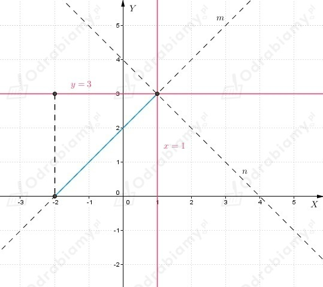

| Punkty równo odległe od dwóch przecinających się prostych leżą na dwusiecznych kątów utworzonych przez te proste. |
a)
Z treści zadania wiemy, że
Wyznaczamy punkt przecięcia prostych
Proste k i l przecinają się w punkcie
Zatem zbiór punktów równo odległych od tych prostych jest sumą dwóch prostych
b)
Z treści zadania wiemy, że
Proste k i l przecinają się w punkcie

Zauważamy, że prosta m przechodzi przez punkt (1, 3) oraz (-2, 0).
Wyznaczamy równanie prostej m.
Prosta n jest prostopadła do prostej m oraz przechodzi przez punkt (1, 3), więc
Zatem zbiór punktów równo odległych od tych prostych jest sumą dwóch prostych
c)
Z treści zadania wiemy, że
Wyznaczamy punkt przecięcia prostych
Proste k i l przecinają się w punkcie
Prosta w której są zawarte dwusieczne kątów utworzonych przez te proste przechodzą
przez punkt (0, 0), zatem równanie tych prostych możemy zapisać w postaci
Powyższa prosta przechodzi przez punkt (1, a), niech a>0.
Zapisujemy równania prostych k i l w postaci ogólnej
Odległość prostych k i l od punkty (1, a) jest taka sama, więc
Zatem zbiór punktów równo odległych od tych prostych jest sumą dwóch prostych
d)
Z treści zadania wiemy, że
Proste nie mają punktu wspólnego, bo są względem siebie równoległe.
Zauważamy, że odległość pomiędzy prostymi, to 3+1=4, zatem
Zatem zbiór punktów równo odległych od tych prostych zawiera się w prostej
a)
Z treści zadania wiemy, że
Niech P(x, y) będzie punktem, takim że |PA|=2|PB|.
Wówczas
Zatem szukanym zbiorem punktów jest okrąg o środku w punkcie (8, 0) i promieniu 4.
b)
Z treści zadania wiemy, że
Niech P(x, y) będzie punktem, takim że |PA|=2|PB|.
Wówczas
Zatem szukanym zbiorem punktów jest okrąg o środku w punkcie (6, 0) i promieniu 4.
c)
Z treści zadania wiemy, że
Niech P(x, y) będzie punktem, takim że |PA|=3|PB|.
Wówczas
Zatem szukanym zbiorem punktów jest okrąg o środku w punkcie (0, -7/2) i promieniu 3/2.